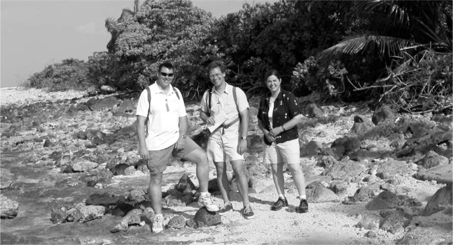

23 Hai Lần Thất Bại Kwaj,
Lần phóng thử đầu tiên
"Muốn đi dạo bằng xe đạp không?", Kimbal hỏi anh trai mình khi họ thức dậy lúc 6 giờ sáng. Họ đã bay đến Kwaj cho ngày phóng dự kiến - 24 tháng 3 năm 2006 - khi Elon hy vọng rằng tên lửa Falcon 1 mà anh đã ấp ủ bốn năm trước sẽ làm nên lịch sử.
"Không, anh cần đến trung tâm điều khiển", Elon trả lời.
Kimbal nài nỉ. "Còn lâu mới đến giờ phóng. Đi dạo một chút đi. Sẽ giúp giảm căng thẳng đấy."
Elon đồng ý, và họ đạp xe với tốc độ nhanh lên một vách đá, nơi họ có thể ngắm bình minh. Elon đứng lặng lẽ ở đó một lúc lâu, nhìn về phía xa, trước khi đến phòng điều khiển. Mặc quần soóc và áo phông đen, anh đi đi lại lại giữa những chiếc bàn gỗ do chính phủ cung cấp. Khi căng thẳng, Musk thường tìm đến tương lai. Anh sẽ làm các kỹ sư của mình ngạc nhiên, những người đang tập trung vào một sự kiện quan trọng sắp diễn ra, bằng cách hỏi họ dồn dập về chi tiết của những thứ còn nhiều năm nữa mới thực hiện: kế hoạch hạ cánh trên sao Hỏa, "Robotaxis" không có vô lăng, chip cấy ghép não có thể kết nối với máy tính. Tại Tesla, giữa những khủng hoảng trong quá trình sản xuất Roadster, anh sẽ bắt đầu hỏi nhóm của mình về tình trạng các bộ phận cho chiếc xe tiếp theo mà anh hình dung.
Giờ đây, trên đảo Kwaj, khi thời khắc phóng Falcon 1 lần đầu tiên chỉ còn tính bằng giờ, Musk lại hỏi các kỹ sư về những bộ phận cần thiết cho Falcon 5, tên lửa tương lai với năm động cơ Merlin. Ông hỏi Chris Thompson, một trong những kỹ sư đầu tiên của SpaceX, đang bận rộn giám sát quá trình đếm ngược tại bàn điều khiển, rằng liệu họ đã đặt hàng loại hợp kim nhôm mới cho thùng nhiên liệu chưa. Khi Thompson trả lời là chưa, Musk đã nổi giận. "Chúng tôi đang ở giữa quá trình đếm ngược, vậy mà ông ấy lại muốn thảo luận một cách gay gắt và sâu xa về vật liệu," Thompson sau này kể với Eric Berger. "Tôi hoàn toàn sững sờ khi ông ấy dường như không nhận ra rằng chúng tôi sắp phóng tên lửa, và tôi là người chỉ huy vụ phóng, chịu trách nhiệm cho hầu hết mọi mệnh lệnh. Điều đó thật sự khiến tôi choáng váng."
Chỉ đến lúc phóng, Musk mới tập trung trở lại. Khi Falcon 1 rời bệ phóng, các kỹ sư trong phòng điều khiển giơ tay ăn mừng, Musk dán mắt vào màn hình video từ camera gắn trên tầng thứ hai của tên lửa. Hai mươi giây sau khi cất cánh, nó cho thấy bãi biển hoang sơ và nước biển xanh ngọc của đảo Omelek ở phía xa bên dưới. "Nó phóng rồi!" Kimbal nói. "Nó thật sự phóng rồi!"
Rồi, năm giây sau đó, Tom Mueller, người đang xem dữ liệu truyền về, nhận thấy có vấn đề. "Chết tiệt," anh nói. "Chúng ta đang mất lực đẩy." Koenigsmann thấy ngọn lửa bập bùng xung quanh động cơ. "Chết tiệt," anh lặp lại Mueller. "Có lửa, bị rò rỉ rồi."
Trong giây lát, Musk hy vọng tên lửa sẽ bay đủ cao để lượng oxy giảm dần trong khí quyển dập tắt ngọn lửa. Nhưng thay vào đó, nó bắt đầu rơi xuống. Trên màn hình video, Omelek bắt đầu đến gần hơn. Rồi video mất tín hiệu. Mảnh vỡ bốc cháy rơi xuống biển. "Dạ dày tôi quặn thắt," Musk nói. Một giờ sau, ông và nhóm chủ chốt — Mueller, Koenigsmann, Buzza và Thompson — chen chúc trên trực thăng của quân đội để khảo sát hiện trường vụ tai nạn.
Đêm đó, mọi người tập trung tại quán bar ngoài trời trên đảo Kwaj và lặng lẽ uống bia. Vài kỹ sư đã khóc. Musk trầm ngâm trong im lặng, mặt mũi cứng đờ, ánh mắt xa xăm. Rồi ông nói, rất nhỏ nhẹ. "Khi bắt đầu, tất cả chúng ta đều biết nhiệm vụ đầu tiên có thể thất bại," ông nói. "Nhưng chúng ta sẽ chế tạo một tên lửa khác và thử lại."
Musk và nhóm SpaceX cùng với các tình nguyện viên địa phương đã đi dọc bãi biển Omelek và dùng thuyền nhỏ để thu thập các mảnh vỡ vào ngày hôm sau. "Chúng tôi đặt các mảnh vỡ trong một nhà chứa máy bay và ghép chúng lại với nhau để tìm hiểu nguyên nhân sự cố," Koenigsmann nói. Kimbal, một người đam mê ẩm thực, đã được đào tạo làm đầu bếp sau khi bán Zip2, cố gắng động viên mọi người bằng cách nấu một bữa ăn ngoài trời gồm thịt hầm, đậu trắng đóng hộp và cà chua, kèm theo món salad bánh mì, cà chua, tỏi và cá cơm.
Trên máy bay riêng trở về Los Angeles, Musk và các kỹ sư hàng đầu của ông đã nghiên cứu đoạn video. Mueller chỉ ra khoảnh khắc ngọn lửa bùng lên trên động cơ Merlin. Rõ ràng là do rò rỉ nhiên liệu. Musk sôi sục, rồi bùng nổ với Mueller: "Anh có biết bao nhiêu người khuyên tôi nên sa thải anh không?"
"Sao ông không sa thải tôi đi?" Mueller đáp trả.
"Tôi đã không sa thải anh, phải không?" Musk trả lời. "Anh vẫn còn ở đây." Sau đó, để giảm bớt căng thẳng, Musk đã bật bộ phim hài hành động Team America: World Police. Như thường lệ với Musk, bóng tối đã nhường chỗ cho sự hài hước ngớ ngẩn.
Cuối ngày hôm đó, ông đăng một tuyên bố: “SpaceX sẽ theo đuổi dự án này lâu dài. Dù có khó khăn đến đâu, chúng tôi cũng sẽ làm cho nó thành công.”
Musk có một quy tắc về trách nhiệm: mọi bộ phận, mọi quy trình và mọi thông số kỹ thuật đều phải có người chịu trách nhiệm. Ông có thể nhanh chóng quy trách nhiệm cá nhân khi có sự cố xảy ra. Trong trường hợp vụ phóng thất bại, nguyên nhân rò rỉ xuất phát từ một con tán B-nut nhỏ cố định đường ống nhiên liệu. Musk đã chỉ đích danh Jeremy Hollman, một trong những kỹ sư đầu tiên được Mueller tuyển dụng, là người đã tháo và lắp lại con tán này vào đêm trước ngày phóng để kiểm tra van. Tại một hội thảo công khai vài ngày sau đó, Musk đã mô tả lỗi này là do “một trong những kỹ thuật viên giàu kinh nghiệm nhất của chúng tôi” và những người trong cuộc đều biết ông đang ám chỉ Hollman.
Hollman đã ở lại Kwaj hai tuần để phân tích các mảnh vỡ. Trên chuyến bay từ Honolulu đến Los Angeles, anh đọc được tin tức về vụ phóng thất bại và bị sốc khi thấy Musk đổ lỗi cho mình. Ngay khi hạ cánh, anh lái xe thẳng đến trụ sở SpaceX và xông vào phòng làm việc của Musk. Một cuộc tranh cãi nảy lửa nổ ra, cả Shotwell và Mueller đều phải đến để hòa giải. Hollman muốn công ty rút lại lời tuyên bố của Musk, và Mueller cũng gây sức ép để được phép làm như vậy. Musk đáp: “Tôi là CEO. Tôi là người giao tiếp với báo chí, vậy nên đừng can thiệp.”
Hollman nói với Mueller rằng anh sẽ chỉ ở lại công ty nếu không phải làm việc trực tiếp với Musk. Anh rời SpaceX một năm sau đó. Musk nói rằng ông không nhớ sự việc này, nhưng ông cho rằng Hollman không phải là một kỹ sư giỏi. Mueller không đồng ý: “Chúng ta đã mất một người tốt.”
Hóa ra, Hollman không có lỗi. Khi tìm thấy đường ống nhiên liệu, một phần của con tán B-nut vẫn còn dính lại, nhưng nó đã bị ăn mòn và nứt đôi. Không khí biển ở Kwaj chính là nguyên nhân.
Lần thử thứ hai
Sau thất bại của lần phóng đầu tiên, SpaceX trở nên thận trọng hơn. Đội ngũ bắt đầu kiểm tra kỹ lưỡng và ghi lại chi tiết của từng bộ phận trong số hàng trăm bộ phận của tên lửa. Lần này, Musk không thúc ép mọi người làm việc với tốc độ chóng mặt và bỏ qua sự thận trọng.
Tuy nhiên, ông không cố gắng loại bỏ tất cả các rủi ro có thể xảy ra. Điều đó sẽ khiến tên lửa SpaceX đắt đỏ và chậm trễ như những tên lửa do các nhà thầu của chính phủ chế tạo. Vì vậy, ông yêu cầu một biểu đồ hiển thị mọi bộ phận, chi phí nguyên vật liệu, chi phí mà SpaceX đang trả cho các nhà cung cấp và tên của kỹ sư chịu trách nhiệm giảm chi phí đó. Trong các cuộc họp, đôi khi ông thể hiện rằng mình biết rõ những con số này hơn cả các kỹ sư đang thuyết trình, điều này không phải là một trải nghiệm dễ chịu. Các cuộc họp đánh giá có thể rất khắc nghiệt. Nhưng chi phí đã giảm xuống.
Tất cả điều này đồng nghĩa với việc chấp nhận rủi ro đã được tính toán. Ví dụ, Musk là người đã phê duyệt việc sử dụng nhôm rẻ và nhẹ cho con tán B-nut bị ăn mòn và gây ra thất bại cho chuyến bay đầu tiên của Falcon 1.
Một ví dụ khác liên quan đến thứ gọi là vách ngăn chống sóng sánh. Khi tên lửa bay lên, nhiên liệu còn lại trong thùng có thể bị sóng sánh. Để ngăn chặn điều này, các vòng kim loại cứng có thể được gắn vào thành trong của thùng. Các kỹ sư đã làm điều đó ở tầng thứ nhất của Falcon 1, nhưng việc thêm khối lượng vào tầng trên là một vấn đề lớn hơn vì nó phải được đẩy lên quỹ đạo.
Nhóm của Koenigsmann đã chạy nhiều mô phỏng máy tính để kiểm tra rủi ro từ hiện tượng dao động nhiên liệu. Chỉ một tỷ lệ rất nhỏ trong số các mô hình cho thấy đây là vấn đề. Trong danh sách mười lăm rủi ro hàng đầu mà họ lập ra, rủi ro số một là khả năng lớp vỏ tên lửa mỏng mà họ đang sử dụng có thể bị cong trong quá trình bay. Dao động nhiên liệu tầng thứ hai được xếp hạng thứ mười một. Khi Musk xem xét danh sách này với Koenigsmann và các kỹ sư của mình, ông quyết định chấp nhận một số rủi ro, bao gồm cả dao động nhiên liệu. Khả năng xảy ra của hầu hết các rủi ro này không thể được xác định chỉ bằng mô phỏng. Rủi ro dao động nhiên liệu sẽ phải được kiểm tra trong một chuyến bay thực tế.
Vợt phóng thử nghiệm diễn ra vào tháng 3 năm 2007. Giống như một năm trước đó, vụ phóng bắt đầu suôn sẻ. Đếm ngược về 0, động cơ Merlin được kích hoạt và Falcon 1 nặng nề hướng về không gian. Lần này, Musk theo dõi từ phòng điều khiển tại trụ sở SpaceX ở Los Angeles. “Tuyệt vời! Chúng ta đã làm được,” Mueller hét lên và ôm chầm lấy ông. Khi tầng thứ hai tách ra theo kế hoạch, Musk mím môi, rồi bắt đầu mỉm cười.
“Chúc mừng,” Musk nói. “Tôi sẽ xem lại đoạn video này rất nhiều lần.”
Trong năm phút trọn vẹn, đủ thời gian để khui vài chai sâm panh, niềm hân hoan ngập tràn. Sau đó, Mueller nhận thấy điều gì đó trên video. Tầng thứ hai bắt đầu lắc lư. Dữ liệu truyền về xác nhận nỗi lo sợ của ông. “Tôi biết ngay đó là dao động nhiên liệu,” ông nói.
Trên video, trông như Trái Đất đang quay tròn trong máy sấy, nhưng thực ra đó là tầng thứ hai của tên lửa đang xoay. “Kiểm soát nó, kiểm soát nó,” một kỹ sư hét lên. Nhưng lúc đó đã quá muộn. Ở mốc mười một phút, tín hiệu biến mất. Tầng thứ hai và trọng tải của nó đang rơi trở lại Trái Đất từ độ cao 180 dặm. Tên lửa đã đến được không gian nhưng không thể đi vào quỹ đạo. Quyết định chấp nhận hạng mục thứ mười một trong danh sách rủi ro - không tích hợp vách ngăn chống dao động - đã gây ra hậu quả. “Từ giờ trở đi,” Musk nói với Koenigsmann, “chúng ta sẽ có mười một hạng mục trong danh sách rủi ro của mình, không bao giờ chỉ có mười.”

Bülent Altan nấu món goulash

Hans Koenigsmann, Chris Thompson, và Anne Chinnery trên Kwajalein.